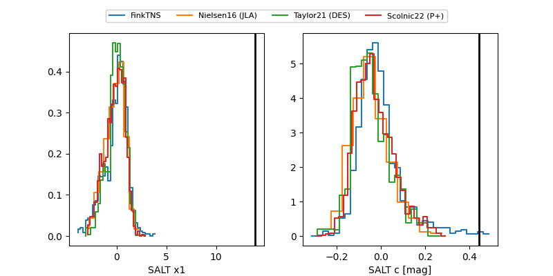

FINK: ZTF25abmpngy
Lasair: ZTF25abmpngy
ALeRCE: ZTF25abmpngy
TNS: 2025wkm
YSE: 2025wkm
ZTF25abmpngy (ztf,fink)
2025wkm (tns,yse)
equatorial (ra, dec) = (36.5860,+37.50003)
galactic (l, b) = (143.0181,-21.64219)

last ztfg=20.47, ztfr=19.59
4 ztfg, 4 ztfr detections